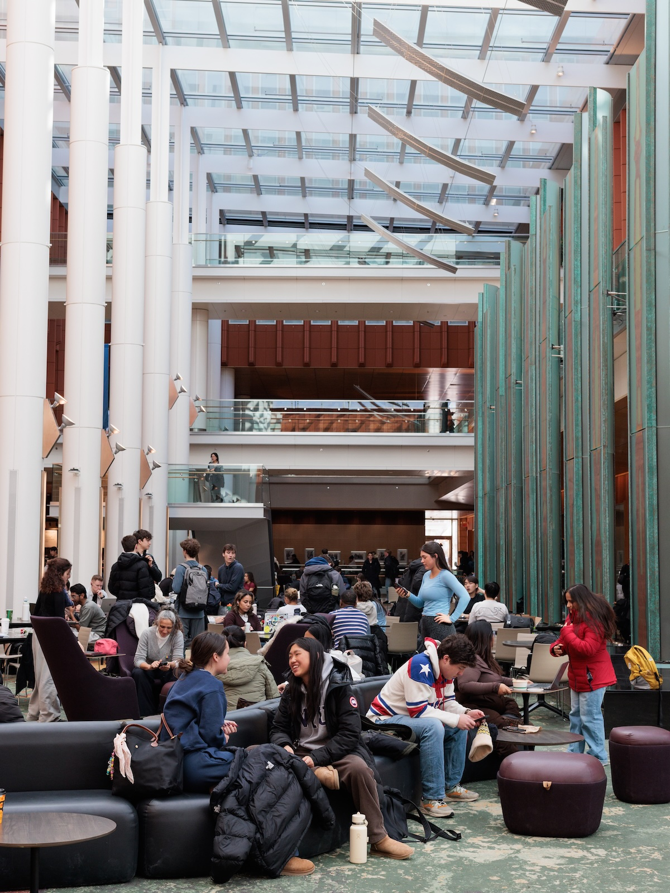

Launch Your Engaged Learning Journey
This is the kickoff. Use this page to make first contact, hold a first meeting, agree on roles, and set a shared plan and communication habits with your partner.

What to do at the start
- Send a clear first email to your partner or client.
- Schedule a kickoff meeting and share an agenda in advance.
- Agree on roles, responsibilities, and how you will communicate.
- Draft a project plan with goals, deliverables, and a timeline.
Why the start matters
Early emails, agendas, and agreements shape the whole semester. A clear start helps the partner know what to expect and helps your team avoid confusion later.
Starting resources
Use these for first contact and kickoff only. Preparation tools (identity snapshot, scoping, commitment form) stay on the Preparing page.
- Initial Client Email Examples — plug-and-play templates for first contact with clients and partners.
- Initial Client Meeting Sample Agenda — step-by-step structure for a professional kickoff call.
- Ginsberg Center Student-Client Partnership Toolkit — principles for reciprocal, respectful community relationships.
- Student-Client Partnership Guide — guidelines for managing expectations and deliverables.
- SO-ELL Schedule — milestones, deadlines, and submission dates.
- Preparing for Your Experience if you still need goals or team-readiness tools.